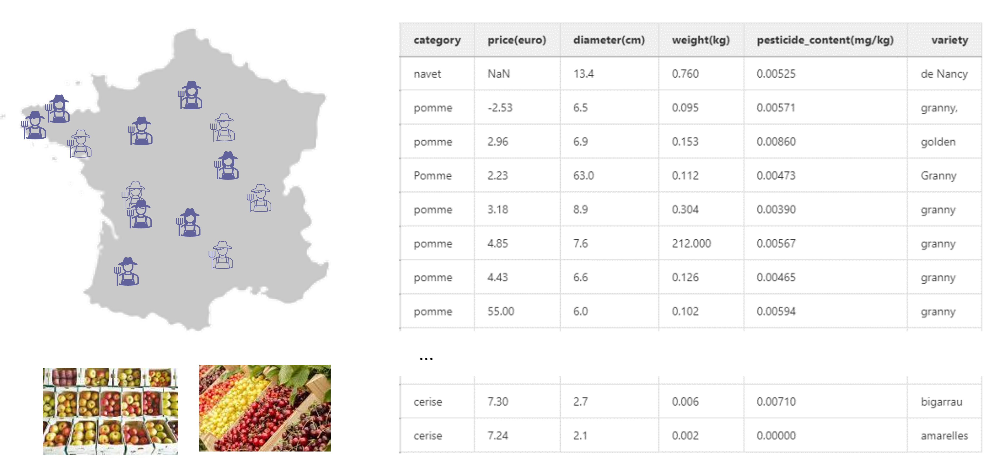

Example dataset¶
In the set of tutorials in this user guide, we will be using a small dataset representing the fruit stocks of different french farmers that cultivate apples and cherries.
The farmers operate together as an agricultural business cooperative to sell their product and therefore regularly update a common dataset in which they indicate their ready-to-sell stocks of products.
Each entry of this common database figures the type of product, its price, the average diameter of the fruits, their average weight, their variety and their pesticide content.
Note
In french, pomme means apple and cerise means cherry
Warning
As this database is filled in by hand, it is prone to human errors and must be automatically checked.
The dataset is available as a csv file and can be downloaded as Example data
import pandas as pd
data = pd.read_csv("fruits_data.csv", index_col=0)
data.head(10)
| category | price(euro) | diameter(cm) | weight(kg) | pesticide_content(mg/kg) | variety | |
|---|---|---|---|---|---|---|
| 0 | navet | NaN | 13.4 | 0.760 | 0.00525 | de Nancy |
| 1 | pomme | -2.53 | 6.5 | 0.095 | 0.00571 | granny, |
| 2 | pomme | 2.96 | 6.9 | 0.153 | 0.00860 | golden |
| 3 | Pomme | 2.23 | 63.0 | 0.112 | 0.00473 | Granny |
| 4 | pomme | 3.18 | 8.9 | 0.304 | 0.00390 | granny |
| 5 | pomme | 4.85 | 7.6 | 212.000 | 0.00567 | granny |
| 6 | pomme | 4.43 | 6.6 | 0.126 | 0.00465 | granny |
| 7 | pomme | 55.00 | 6.0 | 0.102 | 0.00594 | granny |
| 8 | cerise | 7.30 | 2.7 | 0.006 | 0.00710 | bigarrau |
| 9 | cerise | 7.24 | 2.1 | 0.002 | 0.00000 | amarelles |
Over these few first rows, we observe that there are multiple errors in the dataset. For instance:
The first row, describes a turnip (navet in french) which is a vegetable and, therefore, should not be included in a dataset of fruits.
The second row, contains two errors:
On one hand, the indicated price is negative.
On the other hand, the variety contains a comma.
The fourth row, contains three errors:
First, unlike other entries, “Pomme” is spelled with a capital p.
Second, this row indicates an apple (une pomme) whose diameter is 63cm which is clearly an error (maybe it was meant to be in mm).
Finally, “Granny” starts with a capital letter unlike other entries of the variety column.
Row 6 describes a giant apple whose weight is 212 kg.
Row 8 indicates a price of 55€ for a kg of apples.
Finally, “bigarreaux” is missplled as “bigarrau” in row 9.
It is clear that even for such a small dataset, spotting and correcting the errors is hard to do. So, one can only imagine how tedious it can be when large datasets are involved.